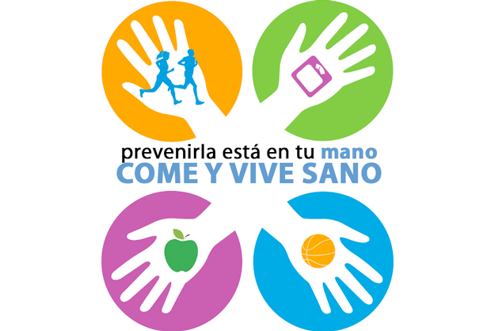
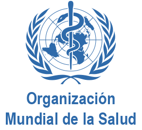

Información del Día Mundial de la Salud


 1
1 6
6

En 1948, la Primera Asamblea Mundial de la Salud propuso que se estableciera un “Día Mundial de la Salud” para conmemorar la fundación de la OMS. Desde 1950, el Día Mundial de la Salud se viene celebrando cada 7 de abril y desde entonces, se elige para su conmemoración un tema que pone de relieve una esfera de interés prioritario para la Organización Mundial de la Salud.


Se invita a todas las personas a prestar una atención especial a un problema de salud con repercusiones en todo el planeta.

La Organización Mundial de la Salud es un organismo especializado de las Naciones Unidas fundado en 1948, cuyo objetivo es alcanzar para todos los pueblos el máximo grado de salud, definida en su Constitución como un estado de completo bienestar físico, mental y social, y no solamente como la ausencia de afecciones o enfermedades.

La cobertura sanitaria universal (CSU) implica que todas las personas y comunidades reciban los servicios de salud que necesitan sin tener que pasar penurias financieras para pagarlos.
La dificultad estriba en salvar los complejos desafíos que se plantean en todos los países, por ejemplo en forma de bajos niveles de ingresos nacionales, débiles sistemas de salud, cambios en las pautas de morbilidad, envejecimiento de la población y grandes desigualdades económicas y sociales.